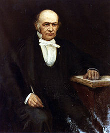

Semblanza
Primeros años
Hamilton fue el cuarto de los nueve hijos de Sarah Hutton (1780-1817) y de Archibald Hamilton (1778-1819),2 que vivían en Dublín, en el 29 de Dominick Street.3 El padre de Hamilton, que era dublinés, trabajaba como abogado. A la edad de tres años, Hamilton había sido enviado a vivir con su tío, James Hamilton,2 un graduado del Trinity College que dirigía una escuela en la localidad de Talbots Castle, en Trim (Condado de Meath).
Se dice que Hamilton demostró un inmenso talento a una edad muy temprana. El predecesor de Hamilton como Astrónomo Real de Irlanda y posteriormente obispo de Cloyne, el Dr. John Brinkley, comentó sobre Hamilton cuando este tenía 18 años: Este joven, no digo "será", sino digo "es", el primer matemático de su época.
Su tío observó que Hamilton, desde una edad temprana, había mostrado una asombrosa habilidad para aprender idiomas (aunque esta afirmación es cuestionada por algunos historiadores, quienes afirman que solo tenía una comprensión muy básica de ellos).6 A la edad de siete años, había ya había hecho un progreso considerable con el hebreo, y antes de los trece años, bajo la supervisión de su tío (un lingüista), había adquirido conocimientos casi en tantos idiomas como años de edad tenía (idiomas europeos clásicos y modernos, y persa, árabe, hindustaní, sánscrito e incluso maratí y malayo). Conservó gran parte de su conocimiento de idiomas hasta el final de su vida, a menudo leyendo persa y árabe en su tiempo libre, aunque hacía tiempo que había dejado de estudiar idiomas y los usaba solo para relajarse.
En septiembre de 1813, el calculista prodigio estadounidense Zerah Colburn se exhibía en Dublín. Colburn tenía 9 años, un año mayor que Hamilton. Los dos se enfrentaron en un concurso de aritmética mental, proclamándose Colburn como el claro vencedor.7 Como resultado de su derrota, Hamilton dedicó menos tiempo a estudiar idiomas y más tiempo a las matemáticas.
Educación
Hamilton formaba parte de una pequeña pero bien considerada escuela de matemáticos asociada con el Trinity College de Dublín, a la que ingresó con 18 años.7 La universidad le otorgó dos Optimes, o calificaciones fuera de lo normal.7 Completó tanto estudios clásicos como matemáticas (bachiller en artes en 1827, y mestría en 1837). Cuando aún era estudiante, fue nombrado profesor de Astronomía de Andrews y Astrónomo Real de Irlanda.11 Posteriormente se estableció en el Observatorio Dunsink, al que permaneció ligado durante el resto de su vida.
Vida personal
Mientras asistía al Trinity College, Hamilton le propuso matrimonio a la hermana de un amigo, quien lo rechazó.11 Hamilton, siendo un joven sensible, enfermó y se deprimió, y estuvo al borde del suicidó.11 Fue rechazado nuevamente en 1831 por Ellen de Vere, hermana del poeta Aubrey Thomas de Vere (1814-1902).11 Su propuesta a Finalmente, Helen Marie Bayly, hija de un predicador rural, aceptó su propuesta, y se casaron en 1833.11 El matrimonio tuvo tres hijos: William Edwin Hamilton (nacido en 1834), Archibald Henry (nacido en 1835) ), y Helen Elizabeth (nacida en 1840).12 Bayly resultó ser extremadamente piadosa, tímida, reservada y padecía una enfermedad crónica, por lo que la vida matrimonial de Hamilton se presume que no debió de ser sencilla.
Quizá el momento más recordado de su vida fue cuando, según contó él mismo, acudió a su cabeza como un relámpago la estructura de los números cuaterniónicos. Evidentemente, Hamilton llevaba mucho tiempo pensando en aquel problema, pero sea como fuere, un día de 1843 paseaba con su esposa por el puente de Brongham, que cruza el canal Real de Dublín, cuando de repente comprendió la estructura de los cuaterniones. Acto seguido grabó con la punta de su navaja, sobre una piedra del puente, la feliz idea (esta inscripción no se conserva hoy día).
Muerte y legado
El matemático conservó intactas sus facultades mentales hasta el final de su vida, y continuó constantemente la tarea de terminar los "Elementos de los cuaterniones" que habían ocupado los últimos seis años de su vida. Murió el 2 de septiembre de 1865, tras un ataque severo de gota.1314 Está enterrado en el cementerio Mount Jerome en Dublín.
Hamilton es reconocido como uno de los científicos más destacados de Irlanda, y a medida que la nación se vuelve más consciente de su herencia científica, cada vez se lo celebra más. Se dice que se le permitía pisar el césped de la Universidad, algo totalmente prohibido. Este hecho camina entre la realidad y la ficción. Posiblemente ocurriera que, absorto en sus meditaciones, descuidara esta prohibición y accidentalmente caminase por los jardines, aunque absolutamente nadie en toda Irlanda se hubiera atrevido a interrumpirle o a amonestarle. Esta anécdota seguramente sirve para dar idea de la categoría de Hamilton como uno de los grandes matemáticos de su tiempo y de la historia.
El Instituto Hamilton está dedicado a la investigación sobre matemáticas aplicadas en la Universidad Maynooth, y la Real Academia de Irlanda celebra una conferencia pública anual que conmemora a Hamilton en la que han intervenido entre otros Murray Gell-Mann, Frank Wilczek, Andrew Wiles y William Timothy Gowers. El año 2005 fue el 200 aniversario del nacimiento de Hamilton y el gobierno irlandés lo designó como el "Año de Hamilton, que celebra la ciencia irlandesa". El Trinity College de Dublín marcó el año con la inauguración del Instituto William Rowan Hamilton.
Irlanda emitió dos sellos conmemorativos en 1943 para celebrar el centenario del anuncio de los cuaterniones.17 El Banco Central de Irlanda acuñó en 2005 una moneda de plata conmemorativa de 10 euros para conmemorar los 200 años desde su nacimiento.
Los talleres de mantenimiento más nuevos del sistema de tranvías de Dublín (LUAS), llevan su nombre.